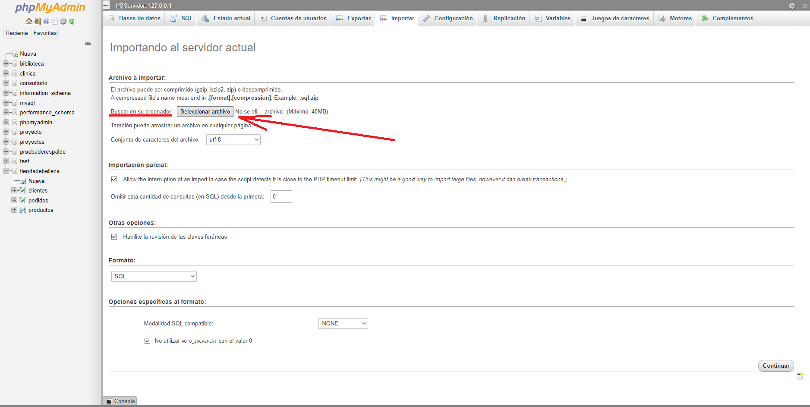
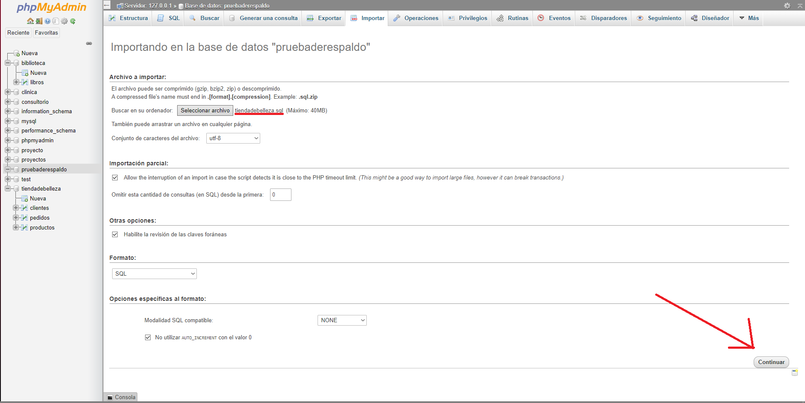

Para crear una base de datos, primero debemos iniciar el programa, procederemos a inciar el modulo de apache y mysql
Luego de iniciarlo procederemos a darle click en admin sobre el modulo mysql donde nos abrira nuestro navegador preferido
Con la pagina ya abierta, existen 2 formas de crear bases de datos, la primera nos dirigimos en la lista de la izquierda a nueva o vamos a donde dice bases de datos
Luego donde dice Nombre de la base de datos le colocamos uno y listo, le damos a crear y ya tendremos nuestra base de datos
Otra forma de crear una base de datos es mediante codigo, para eso nos dirijimos a la pestaña de SQL
Luego de eso colocaremos el codigo para crear la base de datos el cual seria: CREATE DATABASE "Nombre de tu BD". Y ya estaria lista la base de datos para su uso
Para agregar tablas a la BD, es tan sencillo como dar click en la BD, en este caso tiendadebelleza para acto seguido irnos a la pestaña SQL, donde dejaremos caer el codigo mostrado en la imagen
Aqui luego de darle continuar podemos ver ya nuestras 3 tablas creadas
Podemos ver en este codigo que en la tabla pedidos creamos unas relaciones, con este pedazo de codigo: FOREIGN KEY ("Campo de la tabla") REFERENCES "Aqui ponemos la tabla con la que queremos relacionarnos"("Su campo"), la tabla pedidos se relaciona con la tabla clientes y productos a traves de id_cliente y id_producto
Entonces en resumen para crear una tabla debemos utilizar el codigo CREATE TABLE "Nombre"() la cual la podemos crear vacia o agregarle campos
Para salvar nuestra BD iniciaremos el programa luego le daremos click a nuestra BD(tiendadebelleza) y luego iremos a la pestaña exportar
Luego sin tocar nada le daremos al boton de continuar y se nos descargara un archivo sql el cual sera nuestra Base de datos
Crear una Base de datos vacia y luego de eso seleccionarla para dirigirnos a la pestaña Exportar
Luego de eso vamos a buscar el archivo en nuestro ordenador
Ya una vez seleccionado le daremos a continuar y listo
Ya tendremos la base de datos de nuevo como si nunca la hubiesemos perdido, en este caso en especifico le puse un nombre de prueba pero puedes ponerle el nombre que quieras(Este proceso curiosamente debido al programa se utiliza para cambiarle el nombre a una base de datos)